Week 2 Courses Notes
CSS & Partition
Partitions can be seen as a collection of route patterns. Directory numbers, route patterns, and translation patterns can all belong to specific partitions.
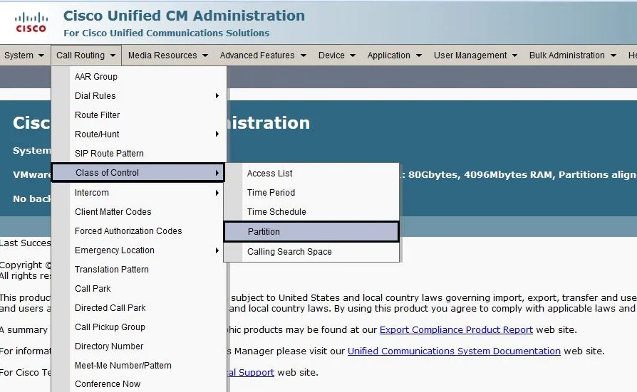
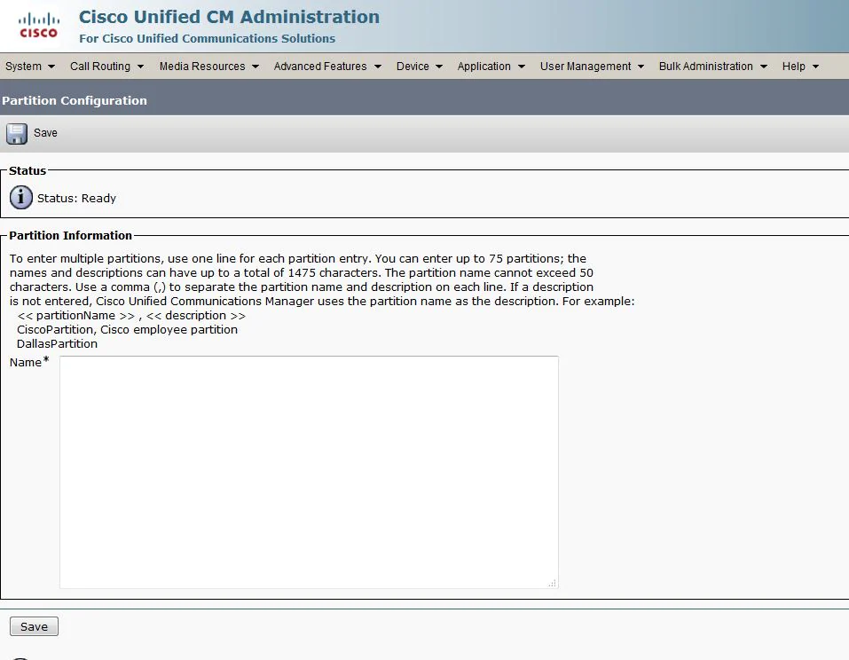
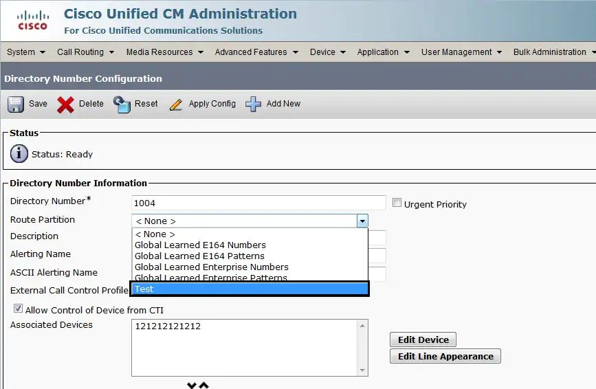
Pattern Types
- Route Pattern
- Translation Pattern
- Directory Numbers
- Calling Party Transformation Patterns
- Called Party Transformation Patterns
- Meet Me Patterns
- Voice Mail Ports
- Hunt Pilots
- Call Park
- Call Pickup
CSS are an ordered list of route partitions and they determine which partitions calling devices must search when they attempt to complete a call. In order to reach a certain destination, the called party's partition must belong to the calling party's CSS.
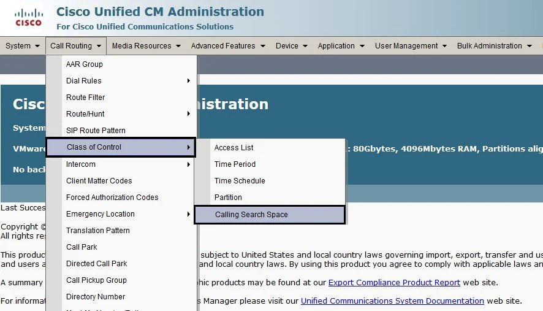
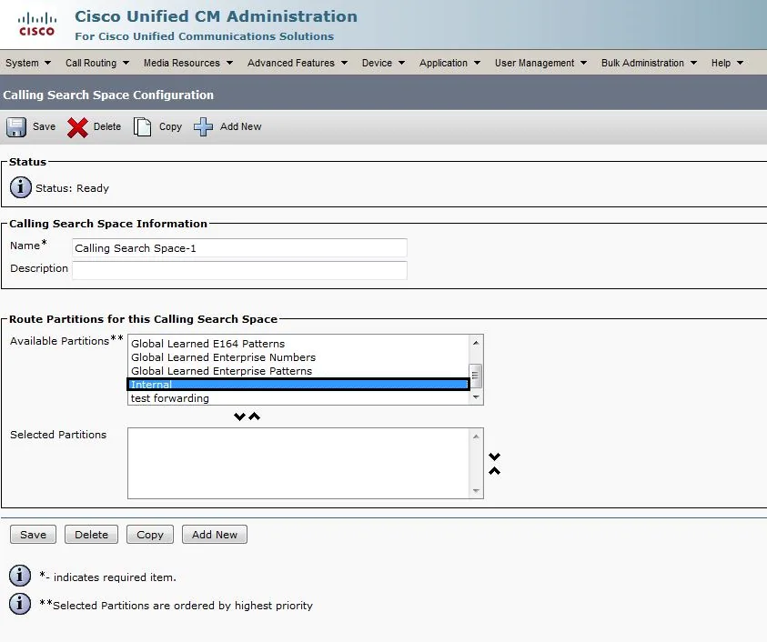
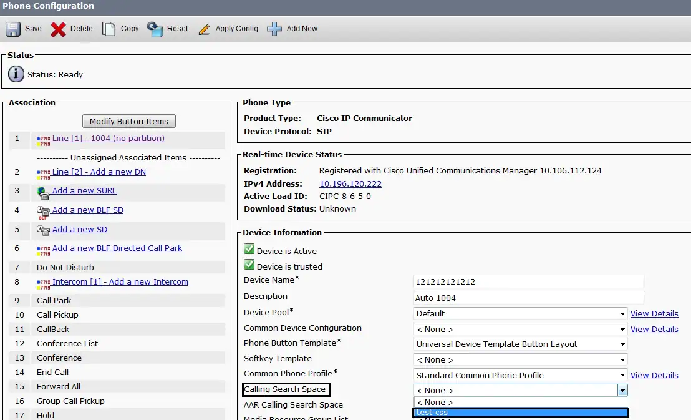
When you attempt to make a call, Cisco CallManager looks into the CSS of the calling party and checks if the called party belongs to a partition within the CSS. If it does, the call is placed or the translation pattern is executed. If not, the call is rejected or the translation pattern is ignored.
You can again assign different CSS to IP phones, directory numbers, call forward all(CFA)/call forward no answer (CFNA)/call forward busy (CFB) destinations, gateways, and translation patterns.
Partitions and CSS facilitate call routing since they divide the route plan into logical subsets based on organization, location, and/or call type.
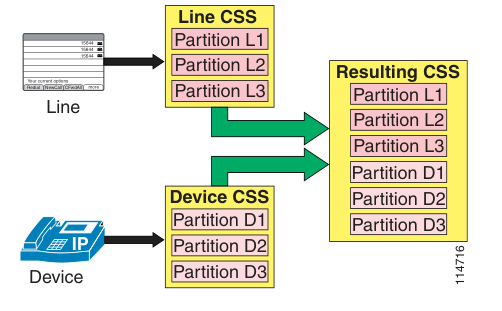
Where Do Calls Originate From ?
- Phones
- Gateways
- Trunks
- Voice Mail Ports
- CTI Ports
- Translation Patterns
Enbloc or Digit-by-Digit
For phones using the Skinny Client Control Protocol (SCCP) and for SIP phones using the Key Press Markup Language (KPML) during dialing, you can implement pattern recognition in Cisco Unified Communications Manager (Unified CM) by configuring route patterns, translation patterns, phone DNs, and so forth. With each digit dialed by the user, the phone sends a signaling message to Unified CM, which performs the incremental work of recognizing a matching pattern. As each key press from the user input is collected, Unified CM's digit analysis provides appropriate user feedback, such as:
- Playing dial tone when the phone first goes off-hook
- Stopping dial tone once a digit has been dialed
- Providing secondary dial tone if an appropriate sequence of digits has been dialed, such as when the off-net access code 9 is dialed
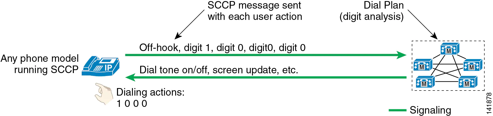
User Input on Type-A SIP Phones
Type-A phones differ somewhat from Type-B phones in their behavior, and Type-A phones do not offer support for Key Press Markup Language (KPML) as do Type-B phones.
- No SIP Dial Rules Configured on the Phone
illustrates the behavior of a SIP Type-A phone with no dial plan rules configured on the phone. In this mode of operation, the phone accumulates all user input events until the user presses either the # key or the Dial softkey. This function is similar to the "send" button used on many mobile phones. For example, a user making a call to extension 1000 would have to press 1, 0, 0, and 0 followed by the Dial softkey or the # key. The phone would then send a SIP INVITE message to Unified CM to indicate that a call to extension 1000 is requested. As the call reaches Unified CM, it is subjected to the dial plan configuration for this phone, including all the class-of-service and call-routing logic implemented in Unified CM's dial plan.
If the user dials digits but then does not press the Dial softkey or the # key, the phone will wait for inter-digit timeout (15 seconds by default) before sending a SIP INVITE message to Unified CM.
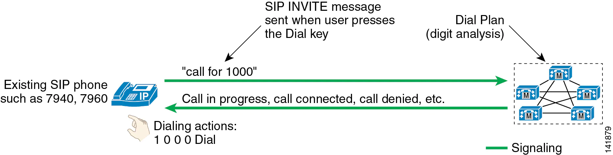
PS : If the user presses the Redial softkey, the action is immediate; the user does not have to press the Dial key or wait for inter-digit timeout.
- SIP Dial Rules Configured on the Phone
The phone is configured to recognize all four-digit patterns beginning with 1 and has an associated timeout value of 0. All user input actions matching the pattern will trigger the sending of the SIP INVITE message to Unified CM immediately, without requiring the user to press the Dial key.
Type-A phones using SIP dial rules offer a way to dial patterns not explicitly configured on the phone. If a dialed pattern does not match a SIP dial rule, the user can press the Dial key or wait for inter-digit timeout.
If a particular pattern is recognized by the phone but blocked by Unified CM, the user must dial the entire dial string before receiving an indication that the call is rejected by the system. For instance, if a SIP dial rule is configured on the phone to recognize calls dialed in the form 919765551234 but such calls are blocked by the Unified CM dial plan, the user will receive reorder tone at the end of dialing (after pressing the final 4 key).
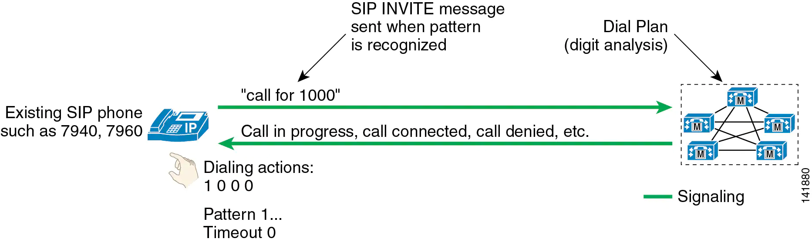
User Input on Type-B SIP Phones
Type-B phones differ somewhat from Type-A phones in their behavior, and Type-B phones offer support for Key Press Markup Language (KPML) but Type-A phones do not.
- No SIP Dial Rules Configured on the Phone
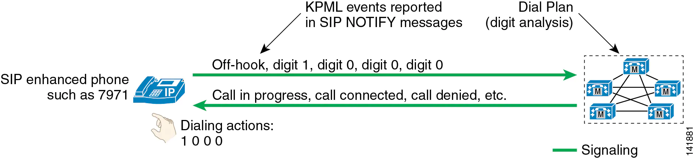
Type-B IP telephones offer functionality based on the Key Press Markup Language (KPML) to report user key presses. Each one of the user input events will generate its own KPML-based message to Unified CM. From the standpoint of relaying each user action immediately to Unified CM, this mode of operation is very similar to that of phones running SCCP.
- SIP Dial Rules Configured on the Phone
the phone is configured to recognize all four-digit patterns beginning with 1, and it has an associated timeout value of 0. All user input actions matching these criteria will trigger the sending of a SIP INVITE message to Unified CM
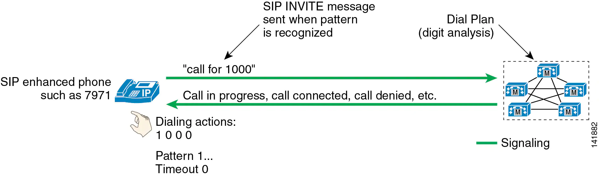
Pattern Matching Logic
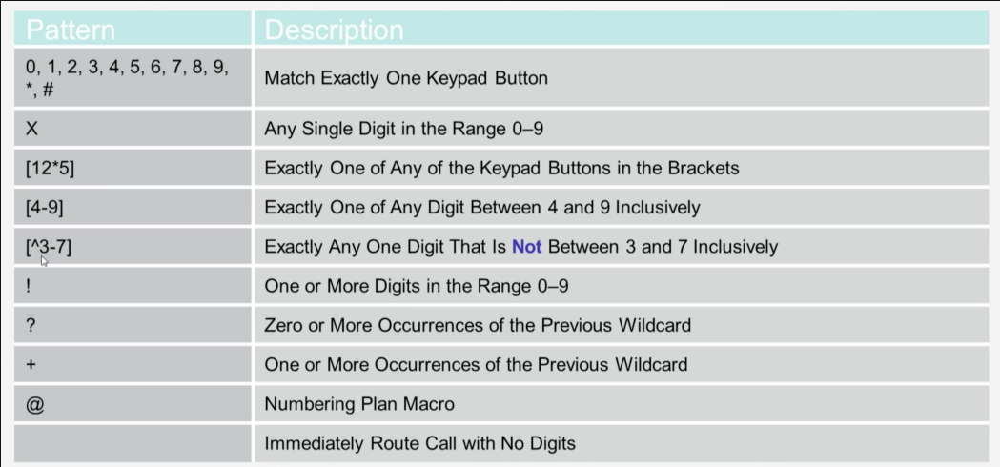
Example:
The question mark (?) wildcard matches zero or more occurrences of the preceding digit or wildcard value.
- The route pattern 91X? routes or blocks all numbers in the range 91 through 91999999999999999999999.
The plus sign (+) wildcard matches one or more occurrences of the preceding digit or wildcard value.
- The route pattern 91X+ routes or blocks all numbers in the range 910 through 91999999999999999999999.
External Route Pattern Architecture
Unified CM automatically "knows" how to route calls to internal destinations within the same cluster. For external destinations such as PSTN gateways, SIP trunks, or other Unified CM clusters, you have to use the external route construct (described in the following sections) to configure explicit routing. This construct is based upon a three-tiered architecture that allows for multiple layers of call routing as well as digit manipulation. Unified CM searches for a configured route pattern that matches the external dialed string and uses it to select a corresponding route list, which is a prioritized list of the available paths for the call. These paths are known as route groups and are very similar to trunk groups in traditional PBX terminology.
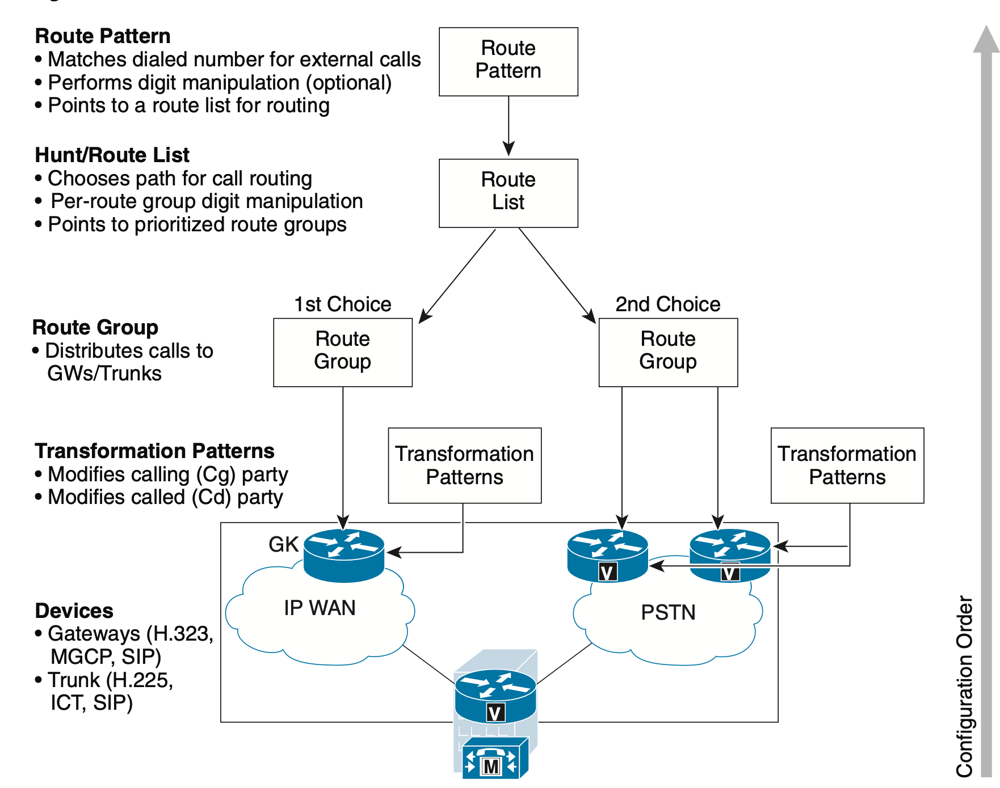
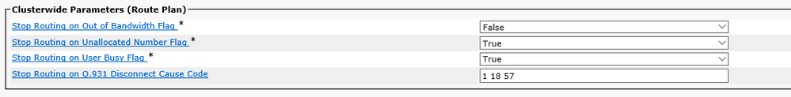
Route Filters : Use route filters only with the @ route pattern to reduce the number of route patterns created by the @ wildcard. A route filter applied to a pattern not containing the @ wildcard has no effect on the resulting dial plan. For large-scale deployments, use explicit route patterns rather than the @ wildcard and route filters. This practice also facilitates management and troubleshooting because all patterns configured in Unified CM are easily visible from the Route Pattern configuration page.
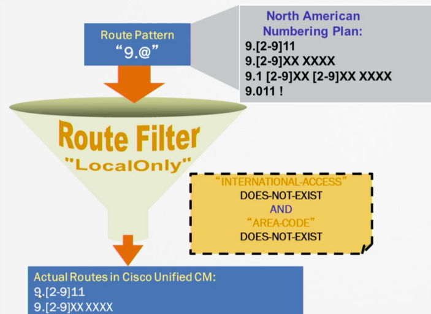
Dial-Peers
- Call Legs**
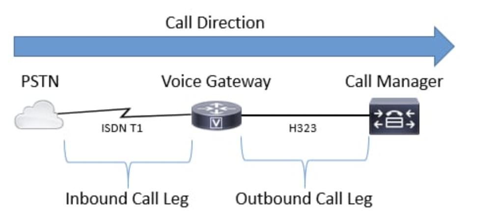
- Inbound Dial Peer
- Outbound Dial Peer
{kind=link}
- Equal Cost Path
- Backup Paths
- Dial-Peer Preference (DNIS,ANI,DP)
- Cube and TDM
- Default Dial-Peer
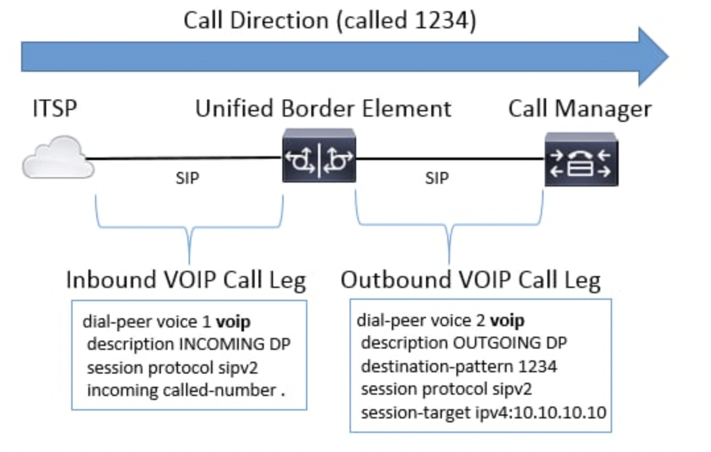
* Any Codec
* No DTMF Relay
* DSCP 0
* VAD Enable
* No RSVP
Inbound Dial Peer Matching Order
The router or gateway matches the information elements in the setup message with the dial peer attributes to select an inbound dial peer. The router or gateway matches these items in this order:
1 Called number (DNIS) with the incoming called-number command
First, the router or gateway attempts to match the called number of the call setup request with the configured incoming called-number of each dial peer. Because call setups always include DNIS information, it is recommended to use the incoming called-number command for inbound dial peer matching. This attribute has matching priority over the answer-address and destination-pattern commands.
2 Calling Number (ANI) with the answer-address command
If no match is found in step 1, the router or gateway attempts to match the calling number of the call setup request with the answer-address of each dial peer. This attribute can be useful in situations where you want to match calls based on the calling number (initial).
3 Calling Number (ANI) with the destination-pattern command
If no match is found in step 2, the router or gateway attempts to match the calling number of the call setup request to the destination-pattern of each dial peer. For more information about this, see the first bullet in the Dial Peer Additional Information section of this document.
4 Voice-port (associated with the incoming call setup request) with configured dial peer port (applicable for inbound POTS call legs)
If no match is found in the step 3, the router or gateway attempts to match the configured dial peer port to the voice-port associated with the incoming call. If multiple dial peers have the same port configured, the dial peer first added in the configuration is matched.
5 If no match is found in the first four steps, then the default dial peer 0 (pid:0) command is used.
PS : In order to match outbound dial peers, the router or gateway uses the dial peer destination-pattern called_number command.
Matching Inbound Dial Peers by URI
The Matching Inbound Dial Peers by URI feature allows you to configure the selection of inbound dial peers by matching parts of the URI sent by a remote (neighboring) SIP entity. The match can be done on different parts of the URI like hostname, IP address, DNS name. This feature can be used to configure configuration policies, enforce specific call-treatment, security, and routing policies on each SIP trunk by originating SIP entity.
Example
Device(config)# voice class uri 200
Device(config-voice-uri-class)# host server1
Device(config-voice-uri-class)# ! host ipv4:10.0.0.0
Device(config-voice-uri-class)# ! host dns:xxx.yyy.com
Device(config-voice-uri-class)# exit
!
Device(config)# dial-peer voice 6000 voip
Device(config-dial-peer)# session protocol sipv2
Device(config-dial-peer)# incoming uri via 200
Device(config-dial-peer)# end
PS :There is a matching for cubes.
for inbound dial peer
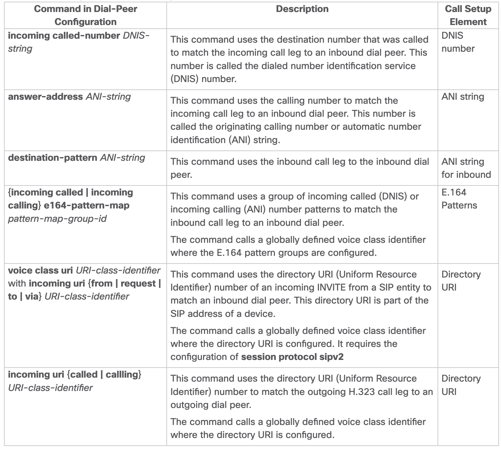
for outgoing dial peer
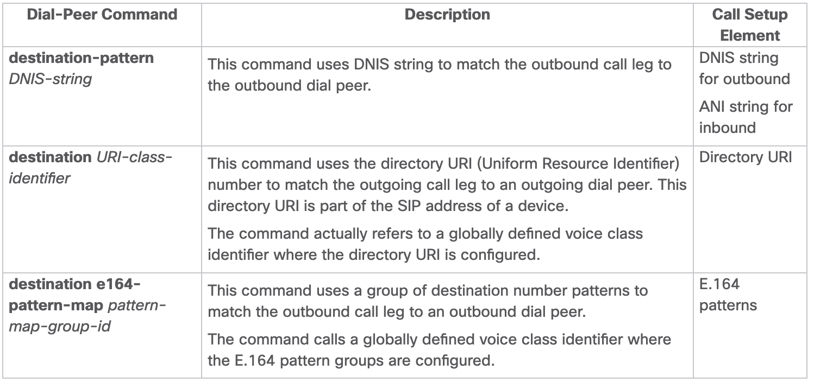
Preference for Dial-Peer Matching
The following is the order in which inbound dial-peer is matched for SIP call-legs:
- voice class uri URI-class-identifier with incoming uri
{via}URI-class-identifier - voice class uri URI-class-identifier with incoming uri
{request}URI-class-identifier - voice class uri URI-class-identifier with incoming uri
{to}URI-class-identifier - voice class uri URI-class-identifier with incoming uri
{from}URI-class-identifier - incoming called-number
DNISstring - answer-address
ANIstring
for H323 call-legs:
- incoming uri
{called}URI-class-identifier - incoming uri
{callling}URI-class-identifier - incoming called-number
DNISstring - answer-address
ANIstring
The following is the order in which outbound dial-peer is matched for SIP call-legs:
- destination route-string
- destination URI-class-identifier with target carrier-id string
- destination-pattern with target carrier-id string
- destination URI-class-identifier
- destination-pattern
- target carrier-id string
PS :Route Strings are used with CUCM Intercluster Lookup Service (ILS) and can be configured to allow Cisco Gateways to route VoIP calls via the route-string included in the SIP INVITE received from a CUCM 9.5+ running the ILS service. This feature was added in IOS 15.3(3)M and IOS-XE 3.10S. Most ILS connections are CUCM to CUCM and administrators don't bother involving a CUBE for intercluster trunking. However if we need to perform the function with CUBE in the middle the options are there. CUCM need to have the setting Send ILS Learned Destination Route String enabled on the SIP Profile applied to the SIP Trunk in order to send the x-cisco-dest-route-string header to CUBE.
Example for carrier-ID
voice source-group foo
access-control 98
carrier-id source carrier1
voice source-group bar
access-control 99
carrier-id source carrier2
dial-peer voice 100 pots
carrier-id source carrier1
...
dial-peer voice 200 pots
carrier-id source carrier2
...
ip access-control standard 98
permit 1.1.1.1
ip access-control standard 99
permit 2.2.2.2
deny any any
With the previous configuration, calls from 1.1.1.1 are routed through dial-peer 100, and calls from 2.2.2.2 are routed through dial-peer 200.